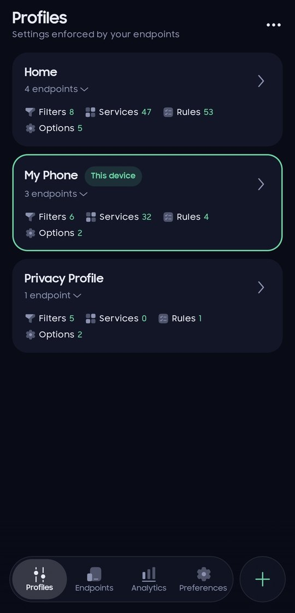
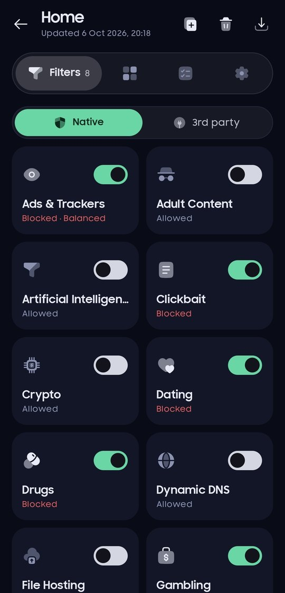
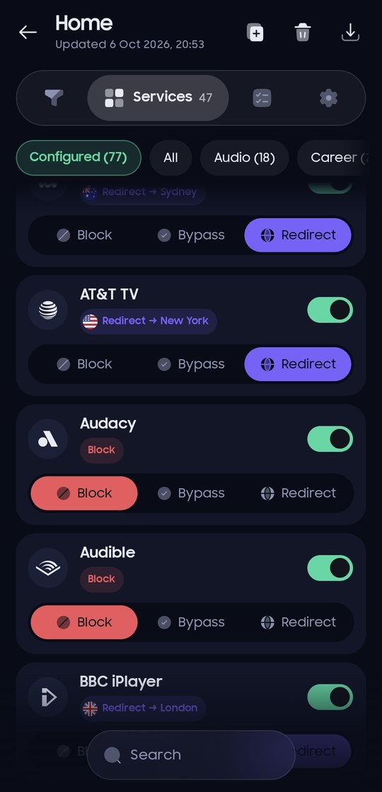
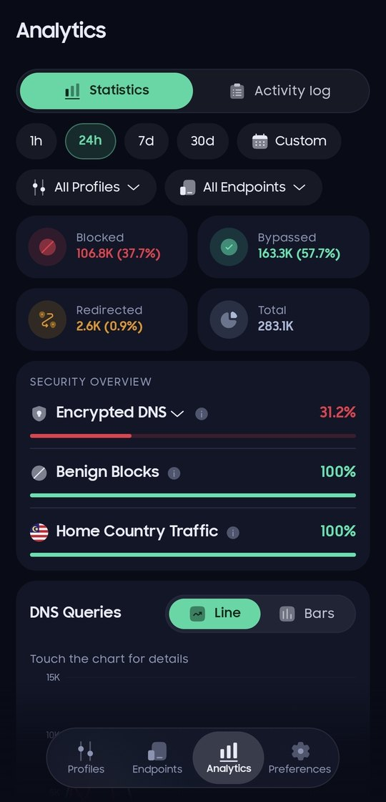
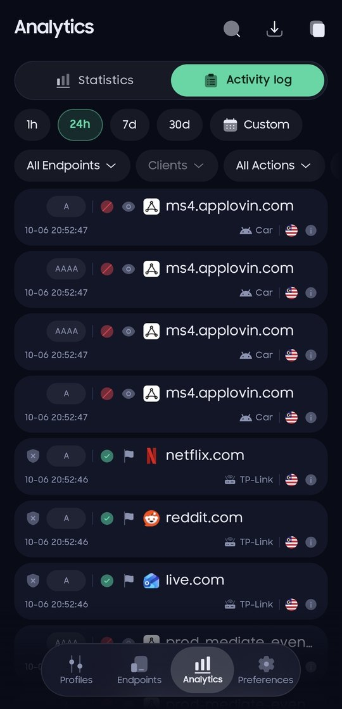
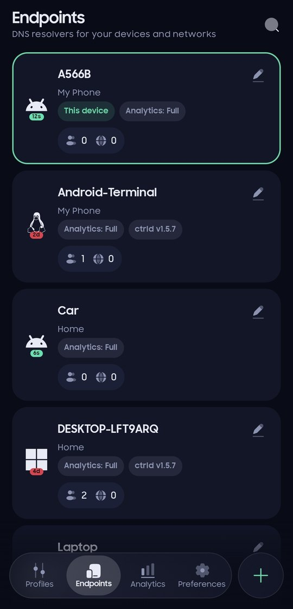
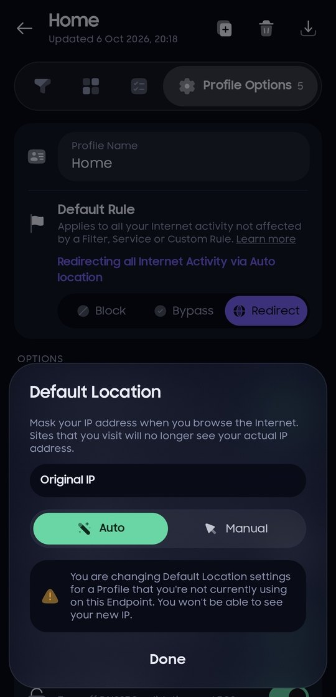
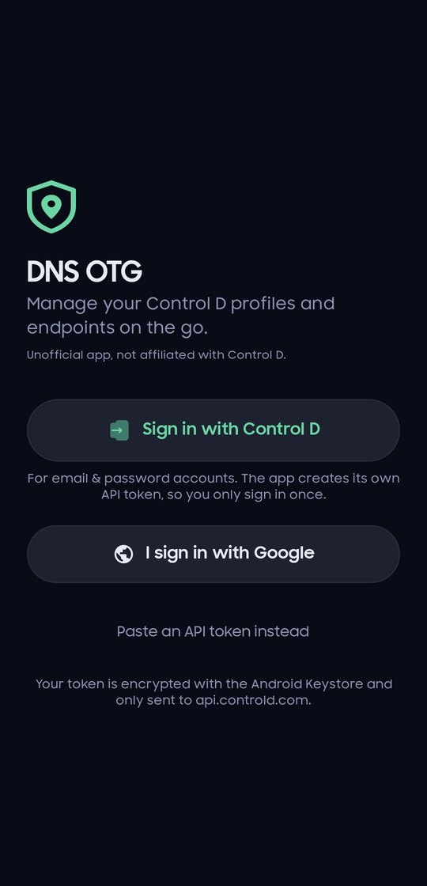

DNS On The Go
An Android app to manage your Control D DNS from your phone.








What it does
Profiles
Filters, services, custom rules, folders and profile options.
Endpoints
Devices, last activity, resolvers, clients and known IPs.
Statistics
Blocked, bypassed and redirected queries, trends and top lists.
Activity log
Live DNS queries with filters, details and one-tap rules.
Redirect locations
Pick where services and rules are routed, grouped by country.
Light and dark
Follows your phone, or pick a theme in Preferences.
Sign in
Sign in with your Control D account, or paste an API token. Google accounts get a token from the dashboard in a couple of taps. The app keeps its token encrypted on your phone and only talks to Control D's own servers: no ads, no analytics, no tracking. The GitHub version also checks GitHub for new releases.
Help test on Google Play
The app is in closed testing on Google Play and needs testers before it can go public. It only takes a minute:
- Join the Google Group groups.google.com/g/dns-otg with the Google account on your phone.
- Open the testing page and tap Become a tester.
- Install the app from Google Play and keep it installed for at least 14 days.
Install
Download the APK on your phone and open it. If Android asks, allow installing apps from your browser. Updates install over the previous version and keep you signed in. The app tells you when a new version is out.
DNS On The Go (DNS OTG) is an unofficial app. It is not made by, affiliated with or endorsed by Control D.
Control D is a trademark of its owner. You need a Control D account to use this app.
Privacy policy